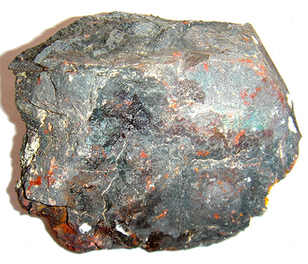

Eco Amplifier
Table of Contents
1 Introduction
About this Project
- In this project, you'll upcycle a product that would otherwise be thrown away into something that hopefully you'll be able to use for years to come. The picture above is a powerful stereo MP3 amplifier that has been discreetly hidden inside a coffee cup from the school canteen.
- You'll also learn about different types of materials that systems engineers can use to create new products, and how to choose wisely for a sustainable future for the planet.
Learn it
- The materials we use every day at home, and also in Systems & Control can be described as either renewable, or non-renewable.
- Renewable energy sources are those which won't run out, like solar power, wind or tidal energy. These usually have the advantage of not generating any pollution (after the initial energy and resource outlay involved in manufacturing them). The disadvantages are that they often only work in certain conditions; solar cells can't work at night, and wind turbines only work when the wind isn't too weak or strong.
- Renewble materials are those which can be replensihed (or re-used) relatively easily - woods and metals, for instance.

- Metals are dug from the ground as ore, refined and then often combined with other things to make alloys like steel. The the products they are made into can be melted down and reused again and again.
- Woods come trees in forests, which are cut down, then machined into timber planks which in turn are used for house and furniture building. At the end of their life, they can either be burnt, or buried so that they can break down naturally. Sustainable timber comes from forests where trees that are cut down are replaced 1 for 1, so that over time the stock can renew. Unfortunately, while some trees grow in a few years, other "Hardwood" trees such as oak can take decades to grow to a useful size.
- It being easier (and cheaper) simply to continue to cut rather than replensish; sadly, the Amazon rainforest loses 150,000 square kilometres (the equivalent area of both England and Wales) every year to to logging operations.
- Non-renewable energy sources are those which will eventually run out. Coal, Oil, Gas and Nuclear Power, for instance. As they are well established technologies, the science behind them is very advanced, and they tend to make good use of converting the heat energy they produce into mechanical energy to drive their turbines. Typically, coal plants can work at up to 40% efficiency; Nuclear power can achieve up to 90%. Domestic Solar panels typically work at around 15% efficiency, by comparison.
- Non-renewable materials are those which will eventually run out; plastics derived from oil, for instance. The manufacture of plastics typically involves chemical processing, and the resulting plastics have excellent aesthetic and structural properties (e.g. Strength, different colours, resistance to weather, etc).
- Unfortunately, most plastics aren't easily biodegradable. Acrylic (which we use a lot with the laser cutter) typically takes several hundred years to break down in landfill; anything you make in Systems & Control that is laser-cut will be around long after your great grandchildren!
2 BadgeIt - Materials
Your turn
- Start a new document, with the title, "Sustainability"
- Write short definitions of renewable and non-renewable materials
- Give examples of three of each.